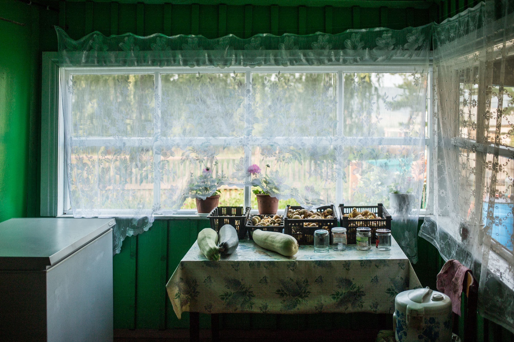
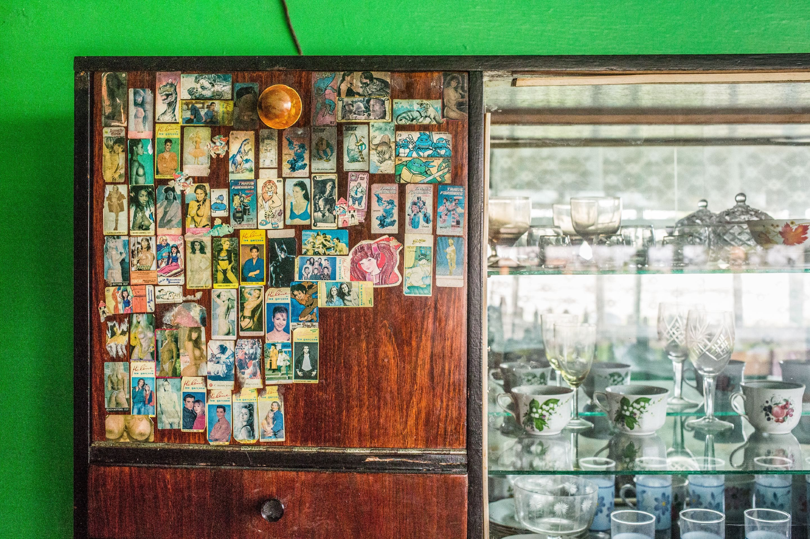
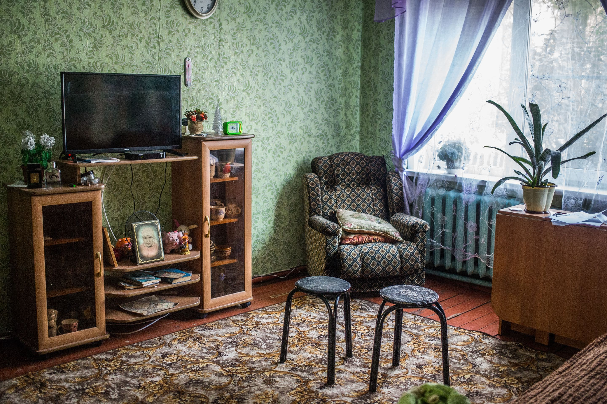

Антон Климов
Вне зоны действия сети
Чем живет сибирский поселок Юголок, в котором нет мобильной связи, зато есть любовь и смерть
18:41
08 ноября 2019
Марина Ахмедова
В списке мест, куда стоило бы поехать репортеру, Юголок не заслуживает даже последнего. Здесь нет ровным счетом ничего для цепляющего заголовка. Неподалеку земли, затопленные при строительстве Братской ГЭС и воспетые Распутиным в «Прощании с Матерой», — но это когда было. Недавно тут выбрали самого молодого мэра в России — но он неделями пропадает в Иркутске, потому что все вопросы решаются там. Здесь — только природа, только люди, только Ангара. И люди, которые умеют любить и умирать. Вот две вечно актуальных новости, которые всегда приходят как breaking news. Корреспондент Bombus стал единственным журналистом, оказавшимся в Юголке.
Любовь
От тихого звонка на калитке во дворе заводится собака. Проходит с полминуты, и на ее лай из дома выходит Игорь Алексеевич — директор сельского клуба. На нем шорты до колен, красная футболка и резиновые шлепанцы. Ему 24 года, но его все называют по имени-отчеству, потому что директор.
— Когда откроется клуб?
— В девять должна быть дискотека, — отвечает Игорь Алексеевич, изучая меня внимательно, но как будто спросонья. — А хор соберется только осенью. У нас каникулы.
Игорь Алексеевич в клубе
Антон Климов
Со всех сторон белеет кашка. Высокие березы плачут над поленницами. Растет картошка в огородах, разбитых у одноэтажных домиков из черного дерева. Где-то тарахтит мотоцикл. Дома украшены цветными наличниками и тарелками-антеннами. А донник пахнет так душисто, будто все село полито медом. Мимо нас проезжает девочка на красном велосипеде.
— И какой репертуар у хора?
— Советская эстрада. Лещенко поем, «Родная земля», «За того парня». Я люблю песни Лещенко, — директор сельского клуба смягчает согласные и старательно выговаривает все «о».
— Не слишком ли вы молоды для Лещенко?
— Просто они…Как сказать…
Клуб Юголка
Антон Климов
Игорь Алексеевич хватается руками за верхнюю перекладину забора и берет долгую паузу, обтачивая ответ:
— Эти песни мысль хоть какую-то доносят. Вон за той горой очень широкое поле, — он показывает на длинную гору, которой заканчивается дорога. — Я по нему пройду — за себя и за того парня, который на войне погиб. И проживу жизнь, которую он должен был прожить. Как у Лещенко поется.
На горе стоит изумрудный сосновый лес, разделенный коричневой проплешиной. В Юголок ведет грунтовая дорога, маршрутка ходит не каждый день. Кажется, гора глухой стеной встает между этим селом и нехоженой Сибирью. В траве цедят цикады. Все село жужжит, дрожит, как будто жизнь его сосредоточилась в этом стрекоте. На гору садится туча. Белая под брюхом, но на гору она набрасывает черную тень.
—Дождь пойдет, — говорит Игорь Алексеевич. Уходя в дом, он хихикает, чем сразу разрушает свой серьезный, почти советский образ.
Еще год назад в селе работала мобильная связь. Сигнал шел из Кумарейки, отражался от Ангары и доходил сюда. Жители шли на дорогу, чтобы поймать точку, и стояли в этой точке, обзванивая родных, друзей и знакомых. Некоторые покупали антенны-усилители и разворачивали их в сторону Кумарейки, чтобы связь брала дома. А в прошлом сентябре Кумарейка убавила сигнал. Связь пропала. С месяц после того жители в поисках точки мельтешили по дорогам. Но она исчезла безвозвратно.
Девушки поймали вай-фай возле клуба
Антон Климов
Прежний глава до пропажи связи не дожил, а после его смерти жители уже проголосовали за чужого — 21-летнего студента из Иркутска Ивана Бортникова. Молодому члену партии ЛДПР была отведена роль технического кандидата, но люди предпочли его двум кандидатам из местных. О том, что он стал самым молодым мэром в России, Иван услышал по радио, когда ехал по Иркутску в маршрутке. Не горя энтузиазмом, он прибыл в Юголок, поселился у чужого деда в зимовье и въехал в кабинет в здании сельской администрации, которое стоит тут же, под боком у клуба, и похоже на барак. Сейчас кабинет пустует — глава-студент уехал в Иркутск добиваться подключения села к мобильной связи. Еще он мечтает устроить на крыше сельского клуба обсерваторию.
Смерть
— Собаку не бойся, он ишо щенок. Вот до него у нас большая собака была! — Тамара Владимировна, низкорослая женщина с острыми голубыми глазами впускает меня в калитку своего дома по улице 60-летия ВЛКСМ и враскоряку идет к крыльцу. Я буду у нее ночевать.
В кухне я застаю ее сына Владимира лет сорока пяти, и девочку, которую уже видела на красном велосипеде.
Дома у Тамары Владимировны
Антон Климов
— Звать ее Настей. Мать ее, моя дочь, сейчас в лагере на Ангаре, смотрит за чужими детьми, — говорит Тамара Владимировна. — Телевизер в твоей комнате есть. А читать захочешь, у меня — полный шифоньер книг, — она пододвигает ко мне сахарницу и кружку с чаем. — Я раньше чай без книги пить не могла, много читала Распутина, он хорошо про природу пишет. Раньше-то у нас природа красивая была, ишо не вырубленная, такая, как он описывал. А таперича с тем, что было, и сравнения нет. Только летом, когда все расцветет и заплешины затянет, красиво. И Ангара мелкая таперича. Да и я на дедиктивы и сериалы перешла.
— А вы за нового главу голосовали?
— Не, не голосовали, — Владимир кладет ногу на ногу и ссутуливается. — И как он прошел, не знаю. Вот раньше у нас глава был Андрей Иванович, царство ему небесное. Его боялись и уважали. Ежели он сказал сделать, значит, надо сделать. А не сделаешь, то он подойдет и как стеганет…
— А где этот молодой глава? В селе его нет.
— Он в Иркутске, — сообщает Владимир. — Пробивает мобильную связь.
— Вот если пробьет, я за него голосовать буду, — Тамара Владимировна крестится. — Хоть бы пробил, — и крестится еще раз.
— Не пробьет, — буркает сын. — Нерентабельно. Народу у нас мало.
- 
- 
- 
1/
Антон Климов
— Ну как мало: Кижа, Чичково, мы, Муя, — загибает тугие пальцы мать. — Четыре деревни. А за стационарные телефоны это сколько ж надо платить? Если каждый день на сотовый со стационарного звонить и по двадцать минут разговаривать, тысяча в месяц выходит.
— А вот, допустим, — Владимир выпрямляется, и в его голосе появляется азарт рассказчика, — сломался я зимой на технике в лесу, и я уже никому не позвоню, замерзну. Или в лесу заблудился. А если медведя встречу?
Пока он перечисляет опасности, от которых могла бы спасти мобильная связь, Тамара Владимировна уходит в свою комнату, ложится на кровать, включает телевизор, подкладывает под щеку пухлую ладонь и сонно следит за героями сериала.
Тамара Владимировна
Антон Климов
— На этой молодой он хочет жениться, — зевая, поясняет она мне происходящее. — А она, однако, другого любит. Она умрет потом в ванной — утопится. Ой… У нас-то в старом Юголоке тоже один повесился. Потом еще дочки моей одноклассник в баню пошел и там удавился на детских колготках… Смотришь-смотришь эти сериалы, а путем так и не знаш, что там происходит. Этот в прошлой серии свою любовницу старую убил, потому что родить она ему не могла. Тридцать пять ей, что ли, по виду было. А вот у Ольки учительница была, так она в сорок четыре родила. У ней двое детей от первого мужа уже было, а он умер. Второй мужик появился у ней, но женатый. Ей сорок два, что ли, было. Она от него забеременела, а он уехал в свое село, в Мую. И тогда Светлана-то взяла и аборт сделала. А он приехал и как на нее попер: «Ты че натворила?!». Она тогда в сорок четыре еще забеременела и родила.
— А жена его где была? — спрашиваю.
— Сгулялась, — ставит Тамара Владимировна на разговор суровую печать.
Любовь
В клуб — это по прямой к горе, мимо улицы Ленина, в сторону улицы Советской и никуда не сворачивая. Обещанный тучей дождь не начался. Звон в траве поутих, природа потемнела, в селе как будто убавили дрожь жизни, энергию для которой генерировали насекомые. Но скоро земля задрожит от топота человеческих ног, и в этом тихом размеренном месте человек сам, наконец, станет источником жизни. По крайней мере, так я представляю себе сельскую дискотеку.
— Я покажу тебе дорогу, — догоняет меня Настя на велосипеде.
Доехав до клуба, она разворачивается и молча уезжает.
Дверь открыта. В зале пусто. Я прохожу по скрипучему деревянному полу, выкрашенному в неприятный бежевый цвет. Заглядываю в мутное зеркало у стены. В углах – большие черные звуковые колонки, на одной — пыльный венок из искусственных роз. Игоря Алексеевича я нахожу в библиотеке, он стоит у полок с книгами местных авторов — Распутина, Зверева, Астафьева.
Вид на реку Ангароу недалеко от деревни
Антон Климов
— Распутин описывает те места, которых больше нет, они сейчас под водой, — Игорь Алексеевич захлопывает раскрытую книгу и возвращает ее на полку. – У нас же все село — переселенцы из Шипицино, Черепаново, Карды, Кожевникова. Наши бабушки и дедушки жили ниже по течению, а когда их затопляли, то колхоз перенесли сюда. Там земли добрые были, — говорит он негромко, словно боится спугнуть тишину, сконцентрированную между полок. — Под Шипицино кедрачи росли, все под воду ушло. Кедров теперь у нас нету. А здесь глина одна. Но все равно раньше жизнь кипела. У нас большое хозяйство было, социалистические соревнования проводились. А сейчас вся молодежь отсюда уезжает, — говорит он, и боль корежит его молодое загорелое лицо. Мне кажется, он сейчас добавит: «И сигнал мобильной связи тогда шел к нам из Кумарейки бесперебойно».
— А вы почему не уехали?
— А я себе работу тут нашел. Мне тихий образ жизни нравится. Дом купил, картошку посадил, тридцать кулей в прошлом году снял.
— А почему вы не женитесь, Игорь Алексеевич?
— Не знаю… — в его голосе появляется визгливая нотка испуга.
— Разве тут в селе нет девушки, которая вам нравится?
— Я это… Как бы слова подобрать…
Он замолкает. Проходит минута, две, три, по его глазам видно: мысли ворочаются в его голове.
— Здесь… таких… сейчас нету, — обдуманно с паузами произносит он.
Юлия, сотрудница клуба
Антон Климов
В этот момент дверь в библиотеку со скрипом отворяется, входит молодая женщина в жилетке, сотрудница клуба Юля. Выражение ее лица свободолюбиво и решительно. Она услышала его последние слова, и теперь, сложив руки на груди, сверлит Игоря Алексеевича взглядом.
— Каких-таких нету? — спрашиваю я, и мы вдвоем с Юлей, обступив Игоря Алексеевича, ждем ответа.
— Ну не знаю. Ну вот я книгу читал, но название и автора не запомнил. Там описан мой идеал. На окраине деревни жили мать с дочерью, Софкой. Один человек в нее влюбился, а потом уехал в город и там женился. А как-то приезжает обратно в свой старый дом и решил сходить на окраину, посмотреть, там ли живет Софка, изменилась ли она. А она, так сказать, сохранила свою… эту… наивность, что ли, немного детскую в глазах василькового цвета. И васильки все так же стояли у нее на подоконнике. Она утром ходила по росе, их собирала. И волосы у нее были пышные, пшеничные… Она это… славянской внешности была. А замуж так и не вышла.
— И что он? — напряженно спрашивает Юля.
— А он это… Понял, что по-прежнему ее любит, и уехал. А она осталась одна. А потому что у него ответственность в городе — семья.
— А любовь? – спрашивает Юля.
Вид на реку Ангароу недалеко от деревни
Антон Климов
— Ну, значит, это… — осторожно отвечает Игорь Алексеевич. — Однако раньше надо было думать.
— А вы, Игорь Алексеевич, что выбрали бы на его месте — любовь или ответственность? — спрашиваю я.
— Я бы? Я бы, наверное, все-таки ответственность.
— А перед любовью нет ответственности?! — взрывается эмоциями Юля. — Вот все говорят про ответственность, но никто не хочет взять ответственность за любовь! А любовь — самое светлое чувство на земле!
Взмахнув рукой и поставив пальцем в воздухе точку, она уходит. Но, повернувшись от двери, прагматичным тоном добавляет:
— Лучше выбирать любовь. А ответственность везде можно найти.
Смерть
В клубе сумерки. Бильярдный стол, ряды стульев выступают тенями, а за окном еще светло, отчетливо видны дома, ели, кустарники, столбы. Юля прислоняется к подоконнику. Игорь Алексеевич встает у другого окна. Сгущающаяся темнота скрадывает их черты.
— У нас два года назад такое было, — говорит Юля тоном, исполненным торжества, — мужики вешались. Два парня молодых подряд. У одного жена- красавица, двое детей. Чего не хватало? А он просто в комнате взял и…
— На колготочках?
— Нет, на ремне. А на детских колготках мой сосед Андрей повесился. Сегодня ровно годовщина. Ну, там причина ясная: приворожен своей женой был, а привороженные не живут больше пяти лет.
Клуб Юголка
Антон Климов
— Может, совпадение?
— Есть документальные доказательства. У коллеги нашей Виктории Андреевны муж уехал в Мую, с другой жил, а она осталась с тремя детьми. Привораживала его, чтоб вернулся. Он вернулся через четыре года, а у самого — слезы в глазах. Пошел и на колготках дочери повесился.
— Может, он ту женщину из Муи любил, а тут чувствовал ответственность? — предполагаю я.
— Да было б там кого любить, — гневно отвечает Юля. – Хабалку эту гулящую… А тот второй, который на ремне, он всю жизнь другую любил — одноклассницу. Но она его отвергла, и он рукой махнул с горя и женился на первой попавшейся. Двое детей родилось. Но я не понимаю, зачем вешаться? Ну уйди ты от своей ответственности, помогай детей воспитывать. Зачем из-за нелюбви вешаться?
В клубе тихо, хотя уже десять вечера. На небе показывается первая звезда, мелко поблескивая между туго натянутых электрических проводов. Группа девочек подходит к клубу. Они останавливаются у окон, достают телефоны и ловят клубный wi-fi.
— А почему женщины не вешаются? – спрашиваю я, разглядывая девушек через окно.
— А потому что никто их не привораживает. Женщин много, на всех хватит, — отвечает Юля. — А мужчин у нас мало, вот и делят.
— И в этом выпускном — одни девчонки, — говорит Игорь Алексеевич.
— Уже пол-одиннадцатого, а никого нет, — Юля выглядывает в окно. — Но ничего, начнется зима, будут все тут собираться. У нас мороз до пятидесяти градусов доходит, чем еще заняться? Зимой тут скачут так, что меня на стуле аж подкидывает.
— Не из-за любви это все! — вдруг изрекает Игорь Алексеевич и начинает выписывать в воздухе фигуры руками, собираясь сказать что-то важное. — Не из-за любви. Просто цели у них нет. От безысходности это. Устают они, работают, вахтовым методом уезжают, ночуют непонятно где, кушают непонятно что, лишь бы для семьи денег заработать. И к тридцати годам жилы у них повытянуты, — он резко сбрасывает руки вниз, и они болтаются по швам его клетчатых шорт, словно сухожилия в них лопнули.
Клуб Юголка
Антон Климов
— Здрасти, а вы работаете? — в клуб заходят две девушки.
Юля удаляется за конторку, на которой стоит ноутбук и включает музыку. Колонки сипят, бьют по ушам и, наконец, разряжаются музыкой. Девушки убегают в зал с бежевыми полами. Их обдает сноп светофорно-красного, потом синего цвета. Подростковые фигуры дергаются под музыку. У одной из них сегодня день рождения. Сверху из лампы на пол летят сотни разноцветных огоньков, как светляки они расползаются по всему деревянному полу, будто спеша спрятаться в его щелях, но девушки давят и давят эти огоньки ногами в такт музыке. «Зацепила меня, ослепила меня, до порога довела, а любви не дала», — поет мужской голос.
У Игоря Алексеевича напрягается лицо.
— Смысла в этой песне нет! Мелодии нет! Только пум-пум-пум, и все! Нет, чтобы какую-нибудь нормальную песню поставить! — кричит он и выбегает из клуба.
— Угу, Лещенко, например, — не без сарказма отпускает ему вслед Юля.
Ближе к одиннадцати девушки уходят. Мы с Юлей сидим на лавке на улице. Пока ярче всего горит та звезда, которая зажглась первой. Но для того, чтобы увидеть звезды, надо пристально смотреть в небо хотя бы минуту, и тогда они начнут приближаться. «Хочешь любви? Сначала дай мне ее!» — продолжают надрываться колонки.
— Почему вы голосовали за Ивана Бортникова? — прерываю я молчание.
— Ну, — взрослым уставшим голосом отзывается Юля, — просто если бы местного выбрали, он бы нас всех из клуба, из администрации уволил, и своих родственников взял. А работы другой тут нет. Так что лучше пусть будет этот чужой Иван, он нас не тронет.
— Как вы относитесь к его идее построить здесь обсерваторию?
— Да кому она тут нужна? Вот если он мобильную связь пробьет, цены ему не будет. Люди настрадались со стационарными телефонами. У меня мама в городе, звонишь ей на сотовый, и сумма кругленькая набегает. Так я лучше на детей ее потрачу. Да вот даже муж мой бывший — вышел из дома и пропал на три дня. Хорошо хоть, сарафанное радио докладывает, где его видели. А теперь и муж сплыл. Не везет мне на мужчин. Больше двух лет отношения с ними не получаются.
В клубе
Антон Климов
— Страдаете?
— Уже нет.
— Почему бросил?
— Так спрашивала, не говорит. Просто любовь, наверное, заглушается, если ее не кормить ромашками, — Юля задирает голову. — А я люблю смотреть на звезды, искать Большую и Малую медведицу. Я знаю северную звезду. А месяц, он сейчас растущий. Просто бери его и бери, — она протягивает руку к пожелтевшему месяцу.
Из темноты выходит шумная компания. Мужчины и две женщины выставляют на скамейку бутылки. К нам подходят двое, один высокий, в майке, с выпуклым животом и хорошо прокачанными бицепсами, второй невысокий, широкий, белобрысый. Молчит и смотрит.
— Давайте решим вопрос полюбовно, — надвигается на меня высокий. — Вы нас только что сфотографировали. А мы против. Поэтому мы сейчас возьмем и все-таки обменяемся с вами номерами телефонов.
— Не получится, — говорю я, уходя. — Здесь мобильная связь не доступна!
Любовь
— Им бы только пить да курить, — поджимая губы, выдает Тамара Владимировна и отпивает растворимого кофе. За окном утро, на траве возится щенок Муха. — Это раньше мы все в клуб ходили. Новый год там всем селом встретим, домой бежим, детишек уложим, скотину накормим, и к двум снова туда возвращаемся. И такое веселье у нас начиналось. А сейчас скучно живем.
— Почему?
На площадке Юголка
Антон Климов
— А потому что пить надо меньше! Большинство молодых нигде не работает. Да и где? У нас садик, школа, магазины и все. Ну вот еще три пилорамы есть, на каждой по три человека. Остальные, кому семью кормить надо, надолго из села уезжают. Или на заездки едут — лес рубить. Вон один ноги отморозил, вот посюда отняли… — она заносил руку над голенью, но останавливается. — Не, не буду на себе показывать. А мать-то у него какая больная. Они ж били ее.
— Дети били свою мать?
— Однако били. Муж ее бил. Бьет-бьет, устанет и говорит сыновьям: «Бейте ее, ребяты, бейте». Да, вот ту, которая их в животе таскала девять месяцев. И двое сыновей ее били. А теперь она живая, муж помер, один сын в тюрьме сидит, второй по пьяни руки-ноги отморозил.
Мы выходим с Настей из дома, идем под березами, ветви которых почти касаются наших макушек. Ближе к горе уже слышна музыка и голос Юли, усиленный микрофоном: «Мы приветствуем вас на нашем празднике семьи, любви и верности! А сейчас я хотела бы пригласить на сцену самых маленьких!».
— Настя, твоя бабушка говорила, у вас до Мухи была большая собака. Где она?
— Не знаю, — Настя, цепко взглянув мне в лицо, убегает к батуту, поставленному возле клуба.
Юля в нежно-голубом платье кружит вокруг детей. У входа в клуб готовят сладкую вату. Настя подходит к аппарату, и вместе с другими детьми, белобрысыми и чумазыми, смотрит, как рука частного предпринимателя, смуглая и обожженная, наматывает на палочку сахарные слои, к которым сразу липнет мошкара. Вата стоит сто пятьдесят рублей. Десять минут на батуте — пятьдесят рублей. Двадцать — сто. Редкие родители, пришедшие на праздник, покупают детям сладости, и я догадываюсь: пришли лишь те, кто может себе это позволить.
Юголок
Антон Климов
— Дети, давайте поиграем! — носится по сцене Юля. — Рыбки спят на дне пруда, это правда, дети? Да! Быстро дайте мне ответ, снег бывает летом? Правильно: нет!
Мы с Настей садимся на лавку. Солнце припекает макушки. Вата плавится в наших руках. Сладко пахнет навозом. Из-за угла выходит пара телят, остановившись у сцены, они обивают себя хвостами. Детская игра заканчивается.
Я оборачиваюсь и вижу девушку в розовом платье. Мягко ступая по траве, она приближается к сцене. Толстые пшеничные косы лежат на ее груди. Встретив кого-нибудь, она прикладывает ладонь к груди и, как покорная корова, наклоняет голову: «Здравствуйте. Здравствуйте».
Девушка поднимается на сцену. В ее руке — микрофон. Телята лениво укладываются в траву. Звучит музыка. Девушка поднимает руку и закрывает ладонью глаза, будто ей стыдно стоять тут перед всеми. Отнимает ладонь, открывает глаза — они василькового цвета, и мне даже кажется, что с этого расстояния я могу разглядеть в них детскую наивность.
— Я не могу останавливать время. Я не могу останавливать реки, — начинает она петь пронзительно, звонко. И дети на коленях родителей перестают плакать. — Нету ничего выше, нету ничего больше. Ничего сильней истиной любви. И она во мне дышит, и она летать сможет. И ее ничем не остановить. Люди, любите друг друга, не сжигайте мосты…
Она двигает свободной рукой — скованно, стеснительно, туго, по-деревенски.
Детская площадка Юголка
Антон Климов
В окне клуба появляется бледный Игорь Алексеевич. Его взгляд устремляется в сторону сцены. Занавеска, поднятая сквозняком, ходит у его лица. Девушка, поющая на сцене, — живое воплощение Софки, как будто сошедшее со страниц книги, материализованное мыслью Игоря Алексеевича, слишком долго думавшего о своем идеале.
— И все люди — сестры, и все люди братья, — поет она. — Люди, любите друг друга!
Но Игорь Алексеевич почему-то глух к ее призыву, он смотрит как будто сквозь нее. Музыка смолкает. Софка кланяется публике и уходит в сторону библиотеки, словно возвращается в книгу того неизвестного автора. Я слежу за ней глазами, а когда поворачиваюсь к сцене, там уже стоит костлявая женщина асоциального вида и похабно дергается, не выпуская из рук оранжевый пакет. Игоря Алексеевича в окне больше не видно.
Смерть
В зале клуба вокруг стола собрался хор. На два десятка пожилых женщин один мужчина — Игорь Алексеевич. Они галдят:
— Михална, так ты хлебушек мой отведай самостряпанный!
— Степанна, помнишь, как весной ты мне цветок посулила? А не дала!
— Елки-же-палки, Петровна! Так ты приди и возьми. Рассаживать-то их по добру надо, по солнцу.
— А тебе никто претензий не предъявляет.
— Аааах, — опрокидывает на себя рюмку женщина лет восьмидесяти в искусственных жемчугах. Вскакивает и убегает.
Юголок
Антон Климов
Из окна видно, как она садится на мотоцикл, заводит его. Телята бросаются врассыпную. Женщина лихо уезжает.
Игорь Алексеевич держит на коленях баян. Старушки с опасливым уважением поглядывают на него. Хор затягивает «Ой, калина, ой, малина», и голоса, сливаясь в одну нить, теряют старческое дребезжание, а на самых высоких нотах звучат как девичьи. Игорь Алексеевич цепко вслушивается, наклоняя к хору то одно, то другое ухо.
— Высоко, — говорит он, с претензией ударив второй слог.
На третьей песне Игорь Алексеевич вступает баяном, и он играет так, словно все эти советские и народные песни были написаны при нем, а их популярность совпала с его молодостью и любовью. И жмет он на кнопки так, будто играет на баяне и за себя, и за того парня, и за другого парня, и за третьего, и за многих тех, кому не суждено было пройти с косами по широкому полю, лежащему за горой.
— Игорь Алексеевич у нас ответственный, — говорит женщина в крупных бусах. — Работящий. И постряпать сам может. И некурящий. И непьющий.
— Да, только нет девушки тут по его натуре, — с сожалением вставляет другая, в крупных серьгах. Слушая их, я удивляюсь: «Как они все могли проглядеть Софку в розовом платье?».
— И жену он бить не будет, — нахваливают женщины директора.
— Если сильно выпросит, то будет, уж поверьте.
— Он ей как даст, она успокоится и спать ляжет!
— А если уйдет, то снова придет!
Галина Егоровна
Антон Климов
— Если бьет, значит, любит.
— Не понимаю я такую любовь, — с достоинством произносит одна из женщин и осуждающе оглядывает остальных.
— А помните, как Ленка-то мужа порезала? — доносится с другого конца стола.
— Капусту крошила, а он бегал, бегал вокруг нее. Она повернулась, а нож вот так держит, он на нож и напоролся. Пропорола она его и отсидела за это дело.
— Ой, да что там на самом деле было, кто его знат. Давайте лучше песню!
Они жалобно затягивают «Домик окнами в сад». Чуть позже вступает баян, как будто просится в мелодию: «Можно? Можно и мне?».
— А какая там была черемуха, какая смородина и клубника, — начинает женщина, которую все называют Михална, когда песня смолкает.
Игорь Алексеевич резко вскидывается, будто ему по сердцу прочертили ножом. Михална говорит о землях, затопленных в 60-е годы под Братскую ГЭС:
— А какое там поле широкое лежало. Не чета ему то, что за горой. А березоньки тоненькие стояли — прямонькие, как свечечки. А небо было голубое, а здесь оно не такое. А вода какая вкусная была. И снится мне эта земля. Ягодники снятся. И ребятишки, что в речке там хлюпаются. А сейчас я близко к тому месту не пойду, куда молодежь купаться ездит. Ну я-то предположительно знаю, где могилы наши стоят под водой. Там, внизу они, могилы предков. Я-то помню: черемуха, как она расцветала, ой как пахло сладко, и казалось по весне, что это сугробы снега стоят, — басит Михална голосом то большой, то малой медведицы. — Я-то все помню, и помню, как нас заставляли собственные дома жечь, своей рукой спичку к родимому дому подносить, к дому, где ты родился и вырос.
Юголок
Антон Климов
— А как вы относитесь к планам главы поставить на крыше клуба обсерваторию? — перевожу я разговор на настоящее.
— Эт-че ишо за консерватория? — спрашивают женщины.
— Это телескопы. Будете через них на звезды смотреть.
— Да я что, с лавки звезд не увижу? — гудит хор. — Пусть связь мобильную сначала сделает, а потом будем на звезды смотреть! Ишь, консерватория!
Я ухожу искать Софку, когда они затягивают «Ночью звезды горят, ночью ласки дарят, ночью все о любви говорят».
Любовь
Большая туча садится на гору. Погода ощутима меняется. Каждый дом, каждое дерево и каждая птица чувствуют это и внутренне готовятся к дождю.
Софку мы находим на детской площадке. Ее построил бывший глава на грант, полученный от государства, только отчитаться до конца не успел. Здесь тренажеры, качели, горки, беседка, детские домики. Говорят, такой нет не только в ближних селах, но и в некоторых городах. Софка, уже в джинсах и кофте, стоит у качелей и качает красивую маленькую девочку.
—Это ее племянница, — шепчет мне Настя.
— Привет, — говорю я. – Мне понравилось, как ты пела. А почему ты выбрала эту песню, про любовь?
— Ну просто, — Софка, которая оказывается тоже Настей, опускает глаза и скромно чертит ногой по земле полукруг, — она меня за душу взяла. В ней говорится о том, что люди должны любить друг друга, не должны отвергать друг друга. Неважно, какую ошибку ты совершил, и какая у тебя беда.
Вид на реку Ангароу недалеко от деревни
Антон Климов
— А какая может быть у человека беда? — спрашиваю я.
— Может собака твоя умереть, — говорит Софка-Настя, и маленькая Настя краснеет, заходит мне за плечо, чтобы я не могла ее видеть. Ветер треплет Софкины косы.
— Просто у меня есть одноклассник, — продолжает она, — у него был отец, дядя Семен. И он взял, написал записку «Не вините меня. И я вас ни в чем не виню» и повесился. Жить не хотел. Считал, что никому не нужен.
Софка поднимает на меня васильковые глаза.
— А ты? У тебя было когда-нибудь чувство, что ты никому не нужна?
— Я? — взмахивает она пшеничными ресницами и с нежным придыханием произносит. – Я всем нужна. Меня все любят. Все вокруг.
До того, как пошел мелкий дождь, я успеваю рассказать ей историю книжной Софки, всерьез эту историю приукрасив. В моей версии Софка поет и носит розовое платье. А мужчина, который уехал в город и женился там, каждый день вспоминает ее. А Софка, ожидая его, каждое утро выставляет на подоконнике васильки, собранные по росе.
— И вот он увидел ее через много лет, — заканчиваю я. — И понял, что всю жизнь только ее и любил. И уехал назад в город.
— А она осталась одна? — выдыхает Софка-Настя.
— Да. На всю жизнь одна-одинешенька.
На нас ложится темная тень. Софка-Настя сжимает кулаки и стоит, уставившись в одну точку. По ее лицу мечутся разные чувства, и в глазах такое выражение, будто она видит что-то страшное, может быть, свою судьбу, которую прожила в прошлой жизни, на пыльных страницах советской повести. Небо рассекает фиолетовая вспышка.
— Он не мужчина после такого, его не за что уважать, — звонко и серьезно произносит Софка-Настя. — Он предал любовь. А она, если любила, была права, что ждала. И я бы ждала.
Анна, библиотекарь
Антон Климов
Небо грохочет. Дети уносятся с площадки. Софка-Настя подхватывает с качелей красивую девочку. И мы с маленькой Настей бежим к дому Тамары Владимировны против сильного ветра, под тяжелым холодным дождем, наперегонки с телятами и баранами.
Ночью идет дождь. Тамара Владимировна не спит, через стенку я слышу, как она разговаривает по стационарному телефону: «Ой, Зойку только жалко. Сколько она плакала-плакала, когда он сына-то выгнал. Из-за этого она заболела, я считаю. Из-за этих слез она умерла».
Тамара Владимировна заходит ко мне в комнату, садится на стул.
— А я спать не могу, — говорит она. — Если два часа за сутки посплю, это хорошо. И сонные таблетки мне больше не помогают. А раньше, когда я дояркой работала, пятьдесят голов в день доила, мне лишь бы до подушки было добраться. Думала, выйду на пенсию, уж высплюсь.
— Тамара Владимировна, у вас до Мухи была большая собака. Где она? — спрашиваю я.
— Так Вовка штакетником задавил. Ой-вой-вой, какой он страшный был, овчарка. Я его кормила — черепушку к нему палкой пододвигала. А тут он на меня бросился. Он бы меня сожрал. Вовка вернулся, соседа позвал, вдвоем его задавили.
К утру умытое село просыхает основательно. Шелестят березы. Белеет кашка, и насекомые снова вырабатывают в траве дрожь жизни. Дверь в клуб открыта. За столом под портретом Путина сидит библиотекарь Анна.
Я хожу вдоль полок, будто выбираю для себя книгу: Достоевский, Добролюбов, Чехов, Державин, Гюго, Блок в потрепанных обложках. Распутин, Астафьев, классика советского периода… Не нахожу ни одного современного автора. Листая шершавые, пахучие страницы, я, кажется, начинаю понимать, потому жители Юголока так часто добрым словом вспоминают прошлое и недобрым настоящее. Просто про настоящее им никто не рассказывает. В их библиотеке, не считая дешевых детективов, нет ни одной книги нынешнего периода. И не потому ли Игорь Алексеевич желает прожить жизнь за того парня, что современная литература не рассказывает ему про других парней? А если и рассказывает, то эти истории не попадают в местную библиотеку?
— Я ищу книгу, — оборачиваюсь я к библиотекарю и рассказываю про Софку.
Анна отрицательно качает головой. Она не знает такой книги.
— А почему у вас нет ни одного современного автора?
— А у нас и финансирования на это нет. Я иногда выделяю из своей зарплаты две тысячи и покупаю периодику.
Юголок
Антон Климов
— За свои деньги?!
— Но так-то люди охотней в библиотеку идут, когда новые журналы есть. У нас тут живет восемьсот семьдесят человек. А в библиотеке — триста семьдесят постоянных читателей. То есть каждый третий приходит. Они в основном книги про великую отечественную берут, детективы. Других-то нет. Вот Игорь Алексеевич Распутина много читает.
Смерть и снова любовь
Юля убирает сухие цветы с черного мраморного монумента, на котором выбиты фамилии всех жителей Юголока, принимавших участие в Великой отечественной войне.
— Мы тут решили поставить обелиск, а не церковь. Видать, обелиск для нас святее, чем церковь. Потому что он нашим родственникам поставлен, и к нам имеет непосредственное отношение.
Мы прячемся от солнца в беседке, где находим арсенал пустых бутылок, оставленных на скамейке. Снаружи печет, детей в этот час на площадке нет.
— Вчера на сомов ходила, — рассказывает Юля, поправляя вспотевшую челку. — В залив. Как раз зацвел шиповник, а в это время сомы идут. У них нерест. И вот так надеваешь фонарик, берешь строгу… Вчера они клубком свились — четыре самца вокруг самки, выдавливали ее. Это они так икру давят. Страшно — будто клубок черных змей. Ну я их хлопнула, и в пакет. Сначала брыкались, потом перестали. Сегодня нажарила. Они сами падальщики, любят трупами питаться.
— Значит, они ели тех, кто был похоронен на затопленных кладбищах…
— Да, может быть.
— А вы ели сомов, которые ели их. Значит, вы ели своих покойников.
— Я думала об этом, — неожиданно соглашается Юля. — Но мне детей кормить надо, а сомы слишком вкусные.
— Хотела вас спросить, — начинаю я. — Настя, которая пела на празднике, полностью подпадает под описание Софки. Почему Игорь Алексеевич ее не замечает?
— Настя — Софка?! — удивляется Юля. — Нет, нет и нет! Она, конечно, милая. Настоящая русская красавица. Но вот только почему-то мальчики с ней не дружат.
— Почему?!
— А потому что она детдомовская, и это, видимо, наложило на нее отпечаток. Она очень недолюбленная.
— Как недолюбленная? Ее же любят все вокруг!
Игорь Алексеевич в клубе
Антон Климов
— Нет. Она только в прошлом году пыталась отравиться: выпила кучу таблеток, еле откачали. У нее как раз недостаток любви, и она постоянно ее ищет. У нас в соседней деревне в Кижах детский дом был. И детей оттуда брали чисто из материальной выгоды. Государство за них хорошо платит.
Юля замолкает. В молчании слышна та самая дрожь жизни, и теперь понятно, что именно солнце высекает ее из насекомых, а те отдают ее селу. Картинка в моей голове переворачивается, и в ней девушка в розовом платье, поющая о любви, перестает быть Софкой. Да и сам образ Софки тает на солнце и уже готов окончательно испарится, но тут Юля произносит:
—У нас в селе одна женщина живет — ни мужа, ни детей. Ждала она всю жизнь кого-то. И не выполнила свое предназначение — не продолжила род. А предназначение нельзя нарушать, не нами оно придумано. Она несчастная, как Софка. И никто элементарно не будет ухаживать за ее могилой, — Юля сгребает сухие цветы с лавки, и несет их в урну. — А надо рожать, даже если мужчины нет. Женщина, она такой человек — ответственный, без мужчины сама может ребенка воспитать. И если ребенок есть, в петлю она не полезет. А Игорь… Да его раньше начинало трясти, когда он бутылку видел. Видать, с детства в семье насмотрелся. Поэтому сам не курит, не пьет. Но слишком категоричный. Ему нужна та, которая не пьет, не курит и матом не ругается. Ну нету у нас в селе такой. А любовь еще стукнет его по голове, вот увидишь. Поедет в город и влюбится в азиатку. Будет ему славянская внешность… Иногда мне кажется, что Игорь — единственный человек в нашем селе, которому хорошо без сотовой связи.
Мы спускаемся под палящим солнцем в старую часть села через прохладный ельник. Юля собирает землянику. Выходим к реке, и пьем из одной речки с коровами. Гора близко. Облака низко. Скрипит старый мосток. Скрипят стайки. Пахнет медом так, будто это любовь, о которой в этом селе говорят и поют, полила его медом. И если что и правда из распутинских книжек про этот край, так это описание природы.
— Юля, — зову я, и она сбрасывает с ладони несколько недопитых глотков. — А если ты проснешься однажды утром, и тебя ударит нелюбовь? Ты вдруг поймешь, что всё вокруг тебя не любит — деревья, трава, даже звездное небо над головой.
Юля оглядывается, примеряя на себя такую перспективу.
— А это невозможно, — говорит она прагматичным тоном. — Ну как все это может меня не любить, когда я-то сама все это люблю?..
Вечером за мной приезжает вызванный Тамарой Владимировной водитель. Им оказывается невысокий парень, встреченный в первую ночь клубе. Маленькая Настя не хочет расставаться и убегает плакать в березы.
— Вы приехали на час раньше, — строго говорю я, садясь в машину.
— Как закончил покос, так и приехал. С утра косами косили. Там, за горой, есть у нас широкое поле.
— Вы тоже мечтаете о том, чтобы в селе появилась мобильная связь?
— Нет. Она от покоса будет отвлекать. А нам работу работать надо.
— Зачем вы приходили в клуб?
— Просто. Хотел сидеть на лавке, смотреть на звезды и ни о чем не думать.
Читайте также
-
Длинный заголовок для новости без подводки в девяносто пять знаков может быть в несколько строк
20 часов назад
-
Короткое описание материала максимум 100 знаков может быть в две или несколько строк под заголовком
20 часов назад
Все новости оперативно на нашем телеграм-канале @Bombus
-
Разобраться

Короткое описание материала максимум 100 знаков может быть в две или несколько строк под заголовком
12 часов назад
-
Узнать
Короткое описание материала максимум 100 знаков может быть в две или несколько строк под заголовком
12 часов назад
-
Понять
Короткое описание материала максимум 100 знаков может быть в две или несколько строк под заголовком
12 часов назад